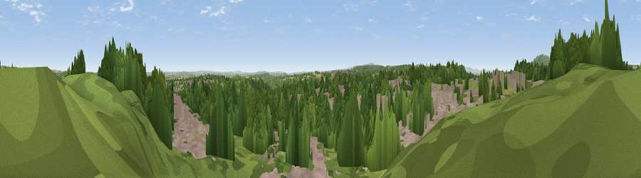

Viewpoint near Madeley
#16324 in England · top 44% of its area beats it · near MadeleyThe view, rendered

A 360° render of this exact spot computed from the terrain model, tree cover and land cover — summer colours, afternoon light, calibrated against photographs of famous viewpoints. Real trees, hedges and buildings will differ in detail.
The panorama
Grey silhouette: terrain skyline in each direction (720 bearings, Earth curvature and refraction included). Dashed green: skyline with trees (+15 m) and buildings (+8 m) as obstacles. Blue strip: how far the ground is visible on each bearing.
Where the view opens
Wedge length = distance to the farthest visible ground on that bearing (vegetation-aware). Rings at 10, 25 and 50 km.
What fills the view
54% woodland · 24% built-up · 18% grassland · 3% cropland
Angular shares of the visible panorama (visual magnitude), not map area. Landscape diversity 0.48 (0–1 Shannon).
Key numbers
More beautiful places nearby
The staircase of upgrades: each row has a higher view potential than everything closer. Driving times are estimates from straight-line distance, calibrated against real road routing — check an actual route before setting out.
| Place | Direction | Drive | Score |
|---|---|---|---|
| Viewpoint near Little Wenlock | NW · 5 km | ~10 min | 59.4 |
| Viewpoint near Much Wenlock | SW · 6 km | ~13 min | 69.2 |
| Viewpoint near Homer | WSW · 6 km | ~13 min | 71.9 |
| The Ercall | NW · 7 km | ~15 min | 79.4 |
| Viewpoint near Little Wenlock | NW · 7 km | ~15 min | 84.2 |
| The Wrekin | WNW · 7 km | ~15 min | 85.0 |
| Viewpoint near Little Wenlock | WNW · 7 km | ~15 min | 86.6 |
| North Hill | S · 58 km | ~80 min | 86.8 |
52.63308, -2.46058 · source: screening · position refined by local search. Computed location — check access rights before visiting.